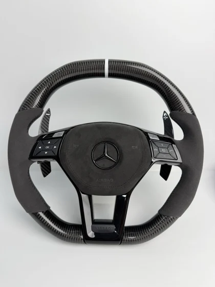
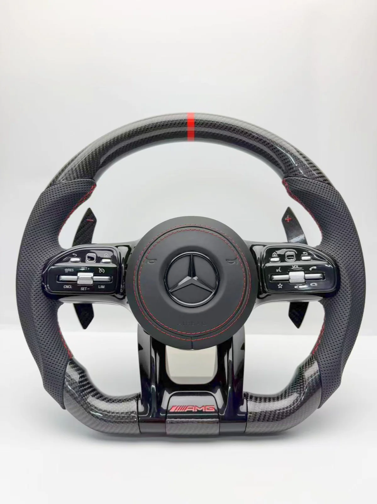
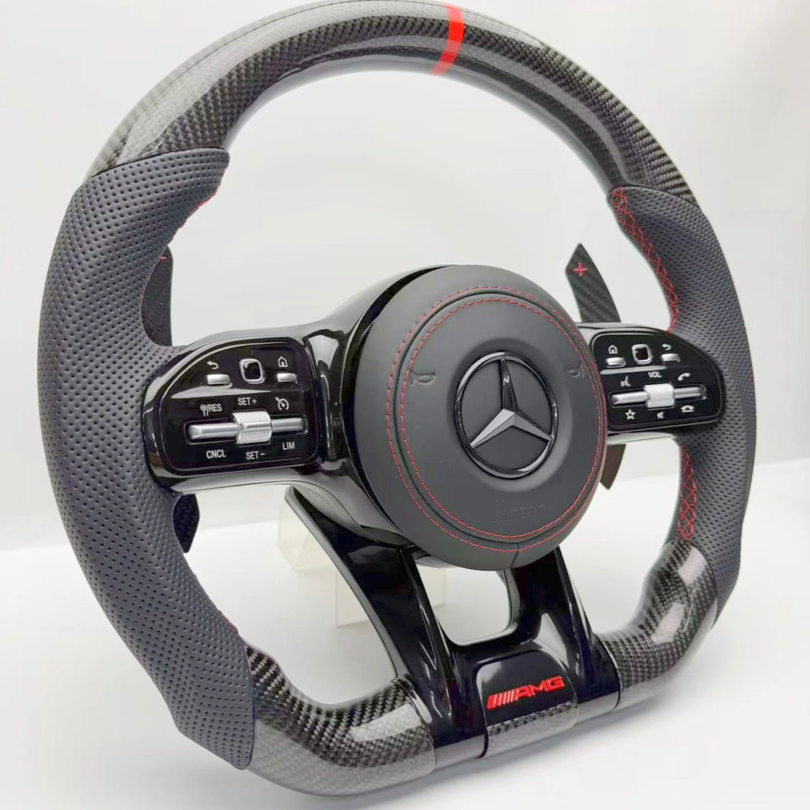
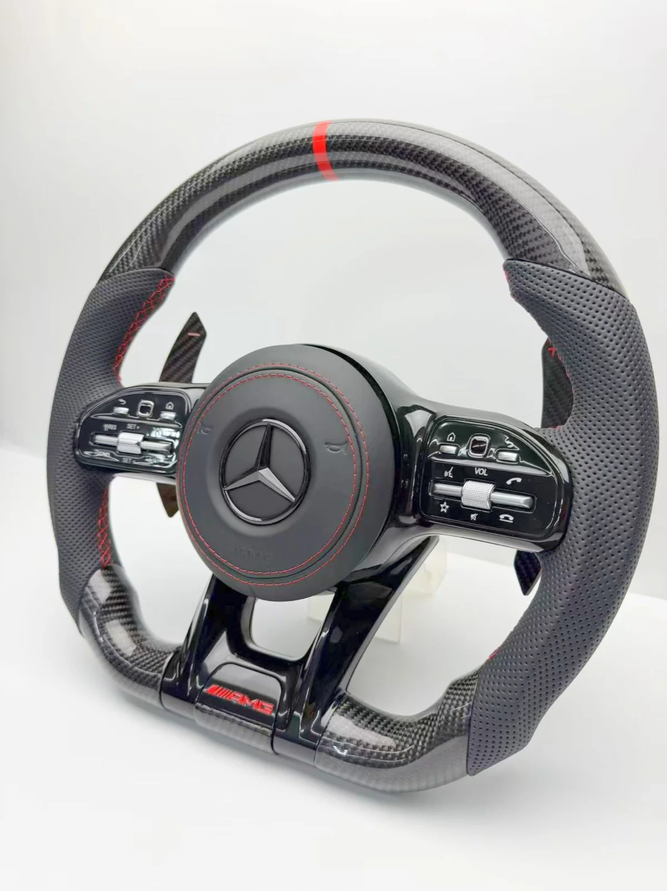
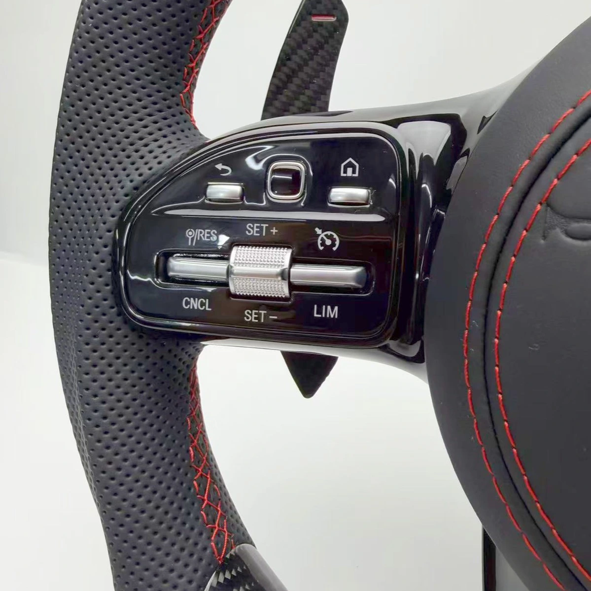
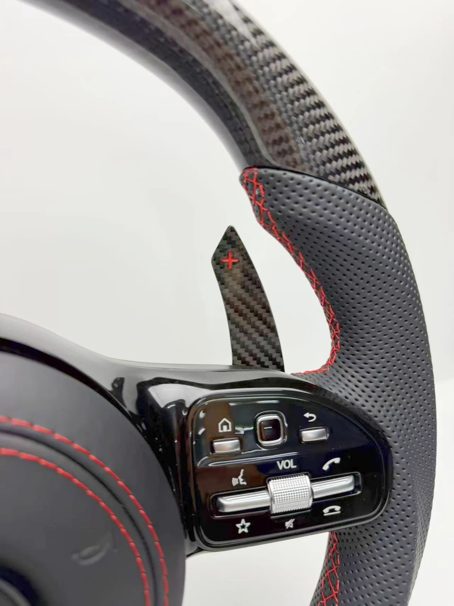
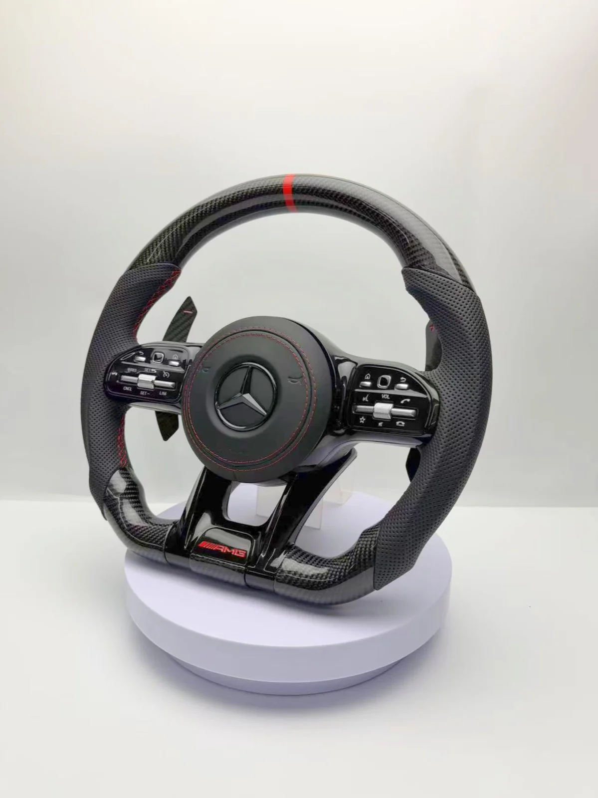

Руль № M059 — Mercedes-Benz






Под заказ
от 44 900 ₽
| Кожаный руль | 33 900 ₽ |
|---|---|
| + Подогрев | +9 000 ₽ |
| + Карбоновая отделка (входит в цену «от») | +11 000 ₽ |
| + Адаптивный круиз | +6 000 ₽ |
| + Вибрация | +5 000 ₽ |
В Telegram откроется сообщение: «Хочу руль № M059 (Mercedes-Benz)».
Руль № M059 из каталога Mercedes-Benz.
Под заказ — изготовление около трёх недель.
Материалы и отделка: AMG · Глянцевый карбон + перфорированная кожа, красная метка, чёрная отделка.
Совместимость с вашим автомобилем подтверждаем перед заказом по кузову, году и фото штатного руля.
Предоплата 3 000 ₽ (5 000 ₽ для рулей от 50 000 ₽), гарантия на руль 6 месяцев.
Доставка и оплата
- Доставка по России и в другие страны (отправляем во все страны, где есть СДЭК).
- Самовывоз в Одинцово, 24/7 — договоритесь с менеджером о времени.
- Предоплата 3 000 ₽ (5 000 ₽ для рулей от 50 000 ₽), остальное при получении.
- Срок: под заказ около трёх недель.
- Гарантия на руль — 6 месяцев.